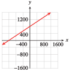

Here is a graph of the linear equation \(3y-4x=12\text{.}\) Notice the points where the graph crosses the \(x\)- and \(y\)-axes. These points are called the intercepts of the graph.
Definition1.3.1.Intercepts.
The points at which a graph crosses the axes are called the intercepts of the graph.
The \(x\)-intercept of the graph shown above is \((3, 0)\text{,}\) and its \(y\)-intercept is \((0, 4)\text{.}\) The intercepts can help us graph a linear equation and can help us interpret the meaning of a linear model.
Checkpoint1.3.2.QuickCheck 1.
What are the intercepts of a graph?
A) The variables displayed on the axes
B) Points where the graphs intersect
C) The highest and lowest points
D) Points where the graph intersects the axes
Answer.
\(\text{D) Points ... intersects the axes}\)
Solution.
Points where the graph intersects the axes
The coordinates of the intercepts are easy to find.
Intercepts of a Graph.
To find the \(x\)-intercept, we set \(y = 0\) and solve for \(x\text{.}\)
To find the \(y\)-intercept, we set \(x = 0\) and solve for \(y\text{.}\)
Example1.3.3.
In Example1.1.11 of Section1.1, we graphed an equation, \(g=20-\frac{1}{12}d \text{,}\) for the amount of gasoline, \(g\text{,}\) left in Leons tank after he has driven for \(d\) miles. Find the intercepts of the graph.
Solution.
To find the \(d\)-intercept, we set \(g = 0\) and solve for \(d\text{.}\)
\begin{align*}
\alert{0} \amp = 20-\frac{1}{12}d \amp\amp\blert{\text{Add }\frac{1}{12}d \text{ to both sides.}} \\
\frac{1}{12}d \amp = 20 \amp\amp\blert{\text{Multiply both sides by 12.}} \\
d \amp = 240
\end{align*}
The \(d\)-intercept is \((240, 0)\text{.}\) To find the \(g\)-intercept, we set \(d = 0\) and solve for \(g\text{.}\)
\begin{equation*}
g = 20 \frac{1}{12}(\alert{0}) = 20
\end{equation*}
The \(g\)-intercept is \((0, 20)\text{.}\)
Checkpoint1.3.4.Practice 1.
Find the intercepts of the graph of \(y=-9-\dfrac{3}{2}x \text{.}\) Enter each intercept as an ordered pair.
The \(x\)-intercept is .
The \(y\)-intercept is .
Answer1.
\(\left(-6,0\right)\)
Answer2.
\(\left(0,-9\right)\)
Solution.
The \(x\)-intercept is \({\left(-6,0\right)}\text{.}\)
The \(y\)-intercept is \({\left(0,-9\right)}\text{.}\)
Subsection1.3.2Meaning of the Intercepts
The intercepts of a graph give us information about the situation it models.
Example1.3.5.
What do the intercepts of the graph in the Example above tell us about Leons camper? \(~\alert{\text{[TK]}}\)
Solution.
The \(d\)-intercept tells us that when \(d = 240\text{,}\)\(g = 0\text{,}\) or that when Leon has traveled 240 miles, he has 0 gallons of gasoline left; the fuel tank is empty.
The \(g\)-intercept tells us that when \(d = 0\text{,}\)\(g = 20\text{,}\) or that when Leon has traveled 0 miles, he has 20 gallons of gasoline left. The fuel tank holds 20 gallons when full.
Checkpoint1.3.6.Practice 2.
The gas tank in Rosas Toyota Prius holds 11 gallons, and she gets 48 miles to the gallon.
Write an equation for the amount of gasoline, \(g\text{,}\) left in the tank after Rosa has driven for \(d\) miles.
\(g=\)
Find the intercepts of the graph.
The \(d\)-intercept is .
The \(g\)-intercept is .
What do they tell us about the problem situation?
The \(d\)-intercept gives:
A) miles Rosa can drive before the tank is empty
B) miles to the next gas stop
C) gallons of gasoline before Rosa begins driving
D) gallons of gasoline per mile of driving
The \(g\)-intercept: gives
A) miles Rosa can drive before the tank is empty
B) miles to the next gas stop
C) gallons of gasoline before Rosa begins driving
D) gallons of gasoline per mile of driving
Hint.
Rewrite the sentence with mathematical symbols:
\begin{equation*}
\begin{gathered}
\small{(\text{gasoline left}) = (\text{gallons in full tank}) - (\text{mileage rate}) \times (\text{miles driven})}
\end{gathered}
\end{equation*}
Answer1.
\(11-{\frac{1}{48}}d\)
Answer2.
\(\left(528,0\right)\)
Answer3.
\(\left(0,11\right)\)
Answer4.
\(\text{A) miles ... tank is empty}\)
Answer5.
\(\text{C) ... begins driving}\)
Solution.
\(\displaystyle g = 11-\dfrac{1}{12}d\)
\((528,0)\text{:}\) After Rosa drives 528 miles, the tank will be empty.
\((0,11)\text{:}\) The tank has 11 gallons before Rosa begins driving.
Subsection1.3.3General Form for a Linear Equation
The order of the terms in a linear equation does not matter. For example, the equation in Example1.1.4 of Section1.1
\begin{equation*}
C=5+3t ~~~~~~~~ \text{ can be written equivalently as } -3t + C=5
\end{equation*}
\begin{equation*}
g=20-\frac{1}{12}d ~~~~~~~~ \text{ can be written as } \frac{1}{12}d+g=20
\end{equation*}
This form of a linear equation, \(Ax +By = C\text{,}\) is called the general form.
Definition1.3.7.General Form for a Linear Equation.
The general form for a linear equation is
\begin{equation*}
\blert{Ax+By=C}
\end{equation*}
(where \(A\) and \(B\) cannot both be 0).
Checkpoint1.3.8.QuickCheck 2.
What is the general form of a linear equation?
\(\displaystyle y=mx+b\)
\(\displaystyle Ax+By=C\)
Any equation whose graph is a straight line.
Set \(x=0\) and solve for \(y\text{.}\)
Answer.
\(\text{Choice 2}\)
Solution.
The general form of a linear equation is \(Ax+By=C\text{.}\)
Some linear models are easier to use when they are written in the general form.
Example1.3.9.
The manager at Alberts Appliances has $3000 to spend on advertising for the next fiscal quarter. A 30-second spot on television costs $150 per broadcast, and a 30-second radio ad costs $50.
The manager decides to buy \(x\) television ads and \(y\) radio ads. Write an equation relating \(x\) and \(y\text{.}\)
Make a table of values showing several choices for \(x\) and \(y\text{.}\)
Plot the points from your table, and graph the equation.
Solution.
Each television ad costs $150, so \(x\) ads will cost $\(150x\text{.}\) Similarly, \(y\) radio ads will cost $\(50y\text{.}\) The manager has $3000 to spend, so the sum of the costs must be $3000. Thus,
\begin{equation*}
150x+50y=3000
\end{equation*}
We choose some values of \(x\text{,}\) and solve the equation for the corresponding value of \(y\text{.}\) For example, if \(x=\alert{10}\) then
If the manager buys 10 television ads, she can also buy 30 radio ads. You can verify the other entries in the table.
\(x\)
\(8\)
\(10\)
\(12\)
\(14\)
\(y\)
\(36\)
\(30\)
\(24\)
\(18\)
We plot the points from the table. All the solutions lie on a straight line.
Checkpoint1.3.10.Practice 3.
The manager at Breadbasket Bakery has $120 to spend on advertising. An ad in the local newspaper costs $15, and posters cost $4 each. She decides to buy \(x\) ads and \(y\) posters. Write an equation relating \(x\) and \(y\text{.}\)
Hint.
Use the general form for a linear equation. What is the total amount of money the manager will spend?
Answer.
\(15x+4y = 120\)
Solution.
\(15x+4y=120\)
Subsection1.3.4Intercept Method of Graphing
Because we really need only two points to graph a linear equation, we might as well find the intercepts and use them to draw the graph.
To Graph a Linear Equation by the Intercept Method.
Find the horizontal and vertical intercepts.
Plot the intercepts, and draw the line through the two points.
Example1.3.11.
Find the \(x\)- and \(y\)-intercepts of the graph of \(150x + 50y = 3000\text{.}\)
Use the intercepts to graph the equation. \(~\alert{\text{[TK]}}\)
Solution.
To find the \(x\)-intercept, we set \(y = \alert{0}\text{.}\)
\begin{align*}
150x-50(\alert{0})\amp =3000 \amp \amp \blert{\text{Simpify.}}\\
150x\amp =3000 \amp \amp \blert{\text{Divide both sides by 150.}}\\
x\amp =20
\end{align*}
The \(x\)-intercept is the point \((20,0)\text{.}\) To find the \(y\)-intercept, we set \(x=\alert{0}\text{.}\)
\begin{align*}
150(\alert{0})-50y\amp =3000 \amp \amp \blert{\text{Simpify.}}\\
506 \amp = 3000\amp\amp \blert{\text{Divide both sides by 50.}} \\
y\amp =60
\end{align*}
The \(y\)-intercept is the point \((0, 60)\text{.}\)
We scale both axes in intervals of 10 and then plot the two intercepts, \((20, 0)\) and \((0, 60)\text{.}\) We draw the line through them, as shown.
Checkpoint1.3.12.QuickCheck 3.
Describe the intercept method of graphing a linear equation.
Make a table of values and plot the points.
Extend the line until it crosses both axes.
Solve for \(y\) in terms of \(x\text{.}\)
Plot the points where \(x=0\) and where \(y=0\text{,}\) then draw the line through them.
Answer.
\(\text{Choice 4}\)
Solution.
Plot the intercepts (that is, the points where \(x=0\) and where \(y=0\)), then draw the line through them.
Checkpoint1.3.13.Practice 4.
Find the \(x\)- and \(y\)-intercepts of the equation in Practice 3 (about Breadbasket Bakery), and use the intercepts to graph the equation. Enter each intercept as an ordered pair.
The \(x\)-intercept is .
The \(y\)-intercept is .
Hint.
Choose convenient scales for the \(x\)- and \(y\)-axes.
Answer1.
\(\left(8,0\right)\)
Answer2.
\(\left(0,30\right)\)
Solution.
The \(x\)-intercept is \({\left(8,0\right)}\text{.}\)
The \(y\)-intercept is \({\left(0,30\right)}\text{.}\)
A graph is below.
Graph for Breadbasket Bakery:
Subsection1.3.5Two Forms for Linear Equations
We have now seen two forms for linear equations: the general linear form,
\begin{equation*}
\blert{Ax + By = C}
\end{equation*}
Do not confuse solving for \(y\) in terms of \(x\) with finding the \(y\)-intercept. Compare:
In the Example above, we solved \(4x 3y = 6\) for \(y\) in terms of \(x\) to get
\begin{equation*}
y = -2 +\frac{4}{3}x .
\end{equation*}
This is still an equation in two variables; it is just another (equivalent) form of the original equation.
To find the \(y\)-intercept of the same equation, we first set \(x = 0\text{,}\) then solve for \(y\text{,}\) as follows:
\begin{align*}
4(0) 3y \amp = 6\\
y = 2
\end{align*}
This gives us a particular point on the graph, namely, \((0, 2)\text{;}\) the point whose \(x\)-coordinate is 0.
Checkpoint1.3.16.Practice 5.
Write the equation \(150x + 50y = 3000\) in the form for a linear model.
\(y=\)
Write the equation \(y = 0.15x - 3.8\) in general linear form with integer coefficients.
Answer1.
\(-3x+60\)
Answer2.
\(3x-20y = 76\)
Solution.
\(\displaystyle y=-3x+60\)
\(-15x+100y=-380~\) or \(~3x-20y=76\)
Exercises1.3.6Problem Set 1.3
Warm Up
1.
The owner of a movie theater needs to bring in $1000 revenue at each screening in order to stay in business. He sells adults tickets for $5 each and childrens tickets at $2 each.
How much revenue does he earn from selling \(x\) adults tickets?
How much revenue does he earn from selling \(y\) childrens tickets?
Write an equation in \(x\) and \(y\) for the number of tickets he must sell at each screening
2.
Karel needs 45 milliliters of a 40% solution of carbolic acid. He plans to mix some 20% solution with some 50% solution.
How much carbolic acid is in \(x\) milliliters of the 20% solution?
How much carbolic acid is in \(y\) milliliters of the 50% solution?
How much carbolic acid is in the solution Karel needs?
Write an equation in \(x\) and \(y\) for the amount of each solution Karel should mix.
Exercise Group.
For Problems 3 and 4, solve the equation for \(y\) in terms of \(x\text{.}\)
3.
\(3x+5y=16 \)
4.
\(20x=30y-45,000\)
Skills Practice
Exercise Group.
For Problems 5-8,
Find the intercepts of the graph.
Graph the equation by the intercept method.
5.
\(9x-12y=36\)
6.
\(\dfrac{x}{9}-\dfrac{y}{4}=1 \)
7.
\(4y=20 + 2.5x\)
8.
\(30x=45y+60,000\)
9.
Find the intercepts of the graph for each equation.
Find the \(y\)-intercept of the line \(y = mx + b\text{.}\)
Find the \(x\)-intercept of the line \(y = mx + b\text{.}\)
12.
Find the \(y\)-intercept of the line \(Ax + By = C\text{.}\)
Find the \(x\)-intercept of the line \(Ax + By = C\text{.}\)
Exercise Group.
For Problems 13-16, write an equation in general form for the line.
13.

14.
15.
16.
Exercise Group.
For Problems 17-20, write the equation in two standard forms:
the general linear form, \(Ax+By=C\text{,}\) with integer coefficients, and
the form for a linear model, \(y = (\text{starting value}) + (\text{rate}) \times x\)
17.
\(\dfrac{2x}{3}+\dfrac{3y}{11}=1\)
18.
\(\dfrac{8x}{7}+\dfrac{2y}{7}=1\)
19.
\(0.4x=4.8-1.2y\)
20.
\(-0.8y=12.8-3.2x\)
Applications
21.
Delbert must increase his daily potassium intake by 1800 mg. He decides to eat a combination of figs and bananas. One gram of fig contains 9 mg of potassium, and one gram of banana contains 4 mg of potassium.
How many mg of potassium are in \(x\) grams of figs?
How many mg of potassium are in \(y\) grams of bananas?
Write an equation for the number of grams of fig, \(x\text{,}\) and the number of grams of banana, \(y\text{,}\) that Delbert needs to eat daily.
Find the intercepts of the graph. What do the intercepts tell us about Delberts diet?
22.
Five pounds of body fat is equivalent to approximately 16,000 calories. Carol can burn 600 calories per hour bicycling and 400 calories per hour swimming.
How many calories will Carol burn in \(x\) hours of cycling?
How many calories will she burn in \(y\) hours of swimming?
Write an equation that relates the number of hours, \(x\text{,}\) of cycling and \(y\text{,}\) of swimming Carol needs to perform in order to lose 5 pounds.
Find the intercepts of the graph. What do the intercepts tell us about Carols exercise program?
23.
A deep-sea diver is taking some readings at a depth of 400 feet. He begins rising at a rate of 20 feet per minute.
Complete the table of values for the divers altitude \(h\) after \(t\) minutes. (A depth of \(400\) feet is the same as an altitude of \(-400\) feet.)
\(t\)
\(\quad ~ 0 ~ \quad\)
\(\quad 5 \quad\)
\(\quad 10 \quad\)
\(\quad 15 \quad\)
\(\quad 20 \quad\)
\(h\)
Write an equation for the divers altitude, \(h\text{,}\) in terms of the number of minutes, \(t\text{,}\) elapsed.
Find the intercepts and sketch the graph.
\(\quad t \quad\)
\(\quad h \quad\)
\(0\)
\(\)
\(\)
\(0\)
Explain what each intercept tells us about this problem.
24.
In central Nebraska, each acre of corn requires 25 acre-inches of water per year, and each acre of winter wheat requires 18 acre-inches of water. (An acre-inch is the amount of water needed to cover one acre of land to a depth of one inch.) A farmer can count on 9000 acre-inches of water for the coming year. (Source: Institute of Agriculture and Natural Resources, University of Nebraska)
Write an equation relating the number of acres of corn, \(x\text{,}\) and the number of acres of wheat, \(y\text{,}\) that the farmer can plant.
Complete the table.
\(~ x ~\)
\(~ 50 ~ \)
\(100\)
\(150\)
\(200\)
\(~ y ~\)
Find the intercepts of the graph.
\(\quad x \quad\)
\(\quad y \quad\)
\(0\)
\(\)
\(\)
\(0\)
Use the intercepts to help you choose appropriate scales for the axes, and graph the equation.
What do the intercepts tell us about the problem?
What does the point \((288, 100)\) mean in this context?
25.
The owner of a gas station has $19,200 to spend on unleaded gas this month. Regular unleaded costs him $2.40 per gallon, and premium unleaded costs $3.20 per gallon.
How much do \(x\) gallons of regular cost? How much do \(y\) gallons of premium cost?
Write an equation in general form that relates the amount of regular unleaded gasoline, \(x\text{,}\) the owner can buy and the amount of premium unleaded, \(y\text{.}\)
Find the intercepts and sketch the graph.
What do the intercepts tell us about the amount of gasoline the owner can purchase?
26.
Leslie plans to invest some money in two CD accounts. The first account pays 3.6% interest per year, and the second account pays 2.8% interest per year. Leslie would like to earn $500 per year on her investment.
If Leslie invests \(x\) dollars in the first account, how much interest will she earn? How much interest will she earn if she invests \(y\) dollars in the second account?
Write an equation in general form that relates \(x\) and \(y\) if Leslie earns $500 interest.
Find the intercepts and sketch the graph.
What do the intercepts tell us about Leslies investments?